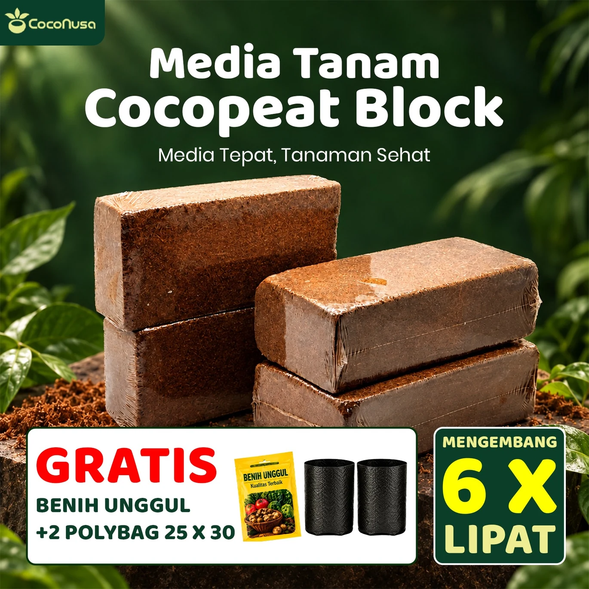
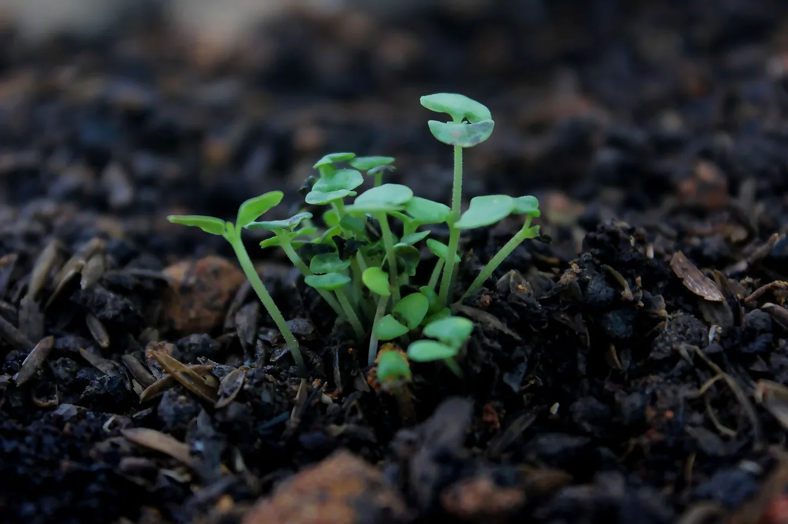
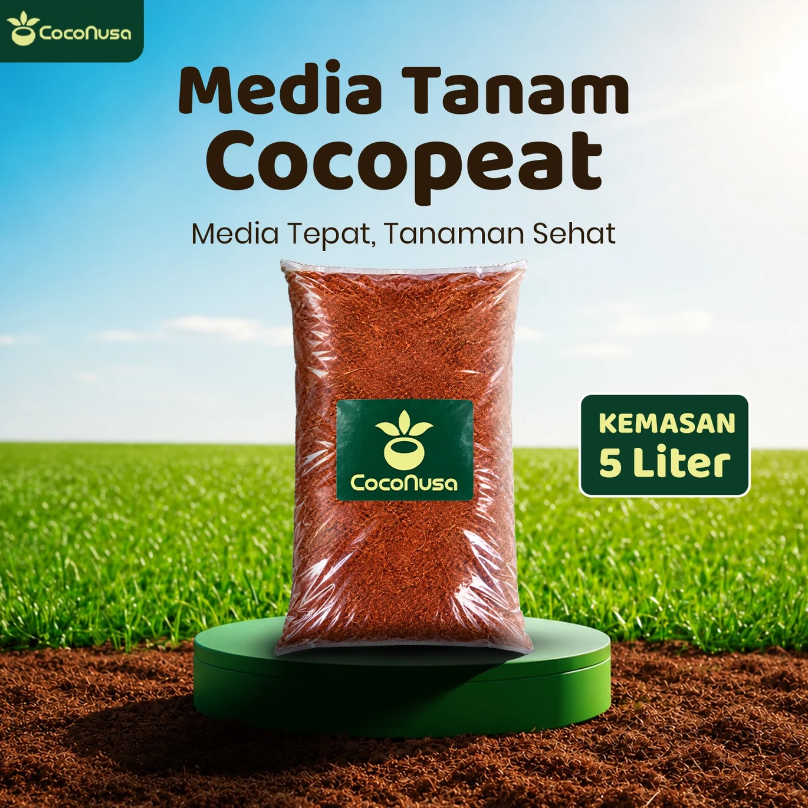
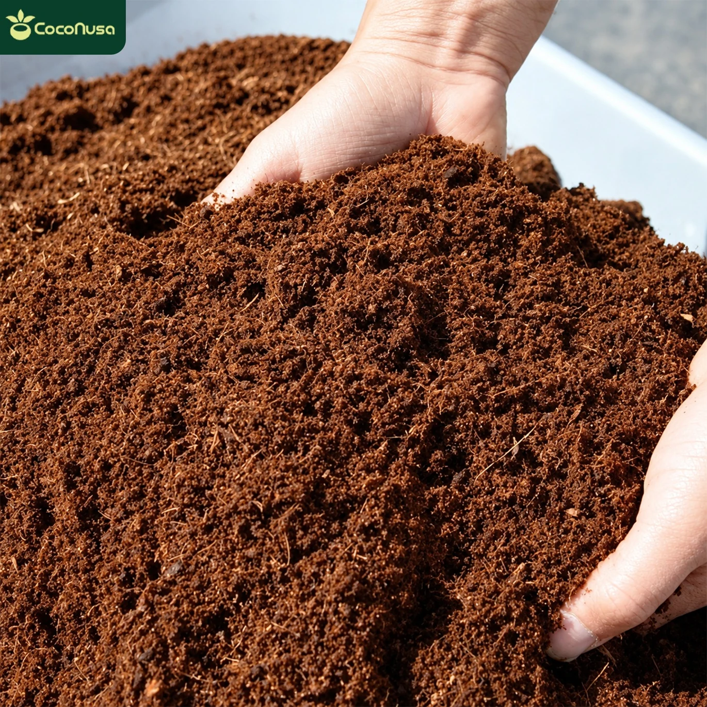

6 fotoPRODUK 01Bentuk block
Cocopeat Block
Bentuk padat, dikembangkan dengan air sebelum digunakan.
Lihat semua foto & detailEmpat pilihan cocopeat dari sabut kelapa. Lihat foto asli produk, kenali ukuran kemasan, dan temukan informasi penggunaan yang mudah dipahami.

Setiap cover dan nama produk bisa diklik. Di halaman detail, Anda bisa melihat enam foto, spesifikasi, cara pakai, dan pilihan WhatsApp.

6 fotoBentuk padat, dikembangkan dengan air sebelum digunakan.
Lihat semua foto & detail
6 fotoKemasan lebih besar untuk menyiapkan campuran media tanam.
Lihat semua foto & detailUkuran praktis untuk pot kecil dan percobaan campuran media.
Lihat semua foto & detailKemasan sesuai penamaan produk: netto 1 kg, 1 liter.
Lihat semua foto & detailFoto produk menggunakan materi Coconusa yang telah Anda sediakan. Gambar dan informasi di kemasan dipertahankan.
Cocopeat merupakan bagian halus dari sabut kelapa yang digunakan sebagai komponen media tumbuh. Karakteristiknya membantu mengatur air dan udara di sekitar akar, tetapi penggunaannya perlu disesuaikan dengan tanaman. [1] [2]
Coir bertekstur halus memiliki kemampuan menahan air sehingga dapat membantu menjaga kelembapan media pot. [1] [3]
Coir sering digunakan bersama bahan media lain. Komposisi campuran bisa disesuaikan dengan kebutuhan drainase dan aerasi. [2] [3]
Cocopeat berasal dari hasil pengolahan sabut kelapa dan menjadi salah satu alternatif komponen media tanam. [2]
Ada perbedaan utama antara cocopeat dalam kemasan serbuk dan bentuk block.

Tuangkan secukupnya lalu lembapkan secara merata. Hindari media yang menggenang atau terlalu padat.
Untuk pot atau tanaman tertentu, kombinasikan dengan media berpori lain agar air berlebih bisa mengalir.
Periksa kelembapan, sirkulasi udara, dan kebutuhan pemupukan sesuai tanaman.
Block perlu direhidrasi dan diuraikan sebelum tanam. Jumlah air dan waktu sebaiknya mengikuti petunjuk pada kemasan; jangan langsung menyemai di media yang terlalu basah. [1] [4]
Lihat foto langkah penggunaan blockPahami perbedaan bentuk, cara menyiapkan, serta informasi yang perlu dikonfirmasi.
Block dipadatkan sehingga perlu direndam dan diuraikan lebih dulu. Cocopeat serbuk dapat disiapkan tanpa proses pengembangan block, tetapi kelembapan dan campurannya tetap harus disesuaikan dengan tanaman.
Jangan menganggap cocopeat sebagai pengganti pupuk. Ia merupakan media tanam; tanaman tetap memerlukan unsur hara sesuai jenis serta fase pertumbuhannya.
Itu adalah klaim yang tertulis pada materi produk Coconusa. Penelitian menunjukkan sabut kelapa dapat mengandung senyawa tanin, sedangkan EC berkaitan dengan kandungan garam terlarut. Artikel umum tidak membuktikan kadar tanin atau EC produk tertentu. Untuk angka atau bukti uji tiap batch, silakan konfirmasi kepada penjual. [1] [5]
Tidak selalu. Setiap tanaman membutuhkan keseimbangan air, udara, dan nutrisi berbeda. Cocopeat sering digunakan sebagai bagian campuran, bukan satu-satunya bahan media. [2] [3]
Nama varian mencantumkan “1 kg netto 1 liter”, sementara berat (kg) dan volume (liter) adalah dua besaran berbeda. Tanyakan berat netto dan volume aktual kemasan kepada penjual sebelum pemesanan.
Penjelasan sifat dasar cocopeat dirangkum dari sumber perguruan tinggi, organisasi hortikultura, dan artikel ilmiah. Klik untuk membaca artikel aslinya.
Pemisahan informasi: manfaat dan sifat umum cocopeat mengacu pada referensi di atas. Isi kemasan, bebas tanin, Low EC, ukuran dan bonus adalah informasi/claim produk yang diberikan; bukan hasil verifikasi laboratorium independen oleh situs ini.
Butuh ukuran yang tepat, informasi stok, harga, atau pengiriman? Hubungi tim Coconusa lewat salah satu nomor di samping.